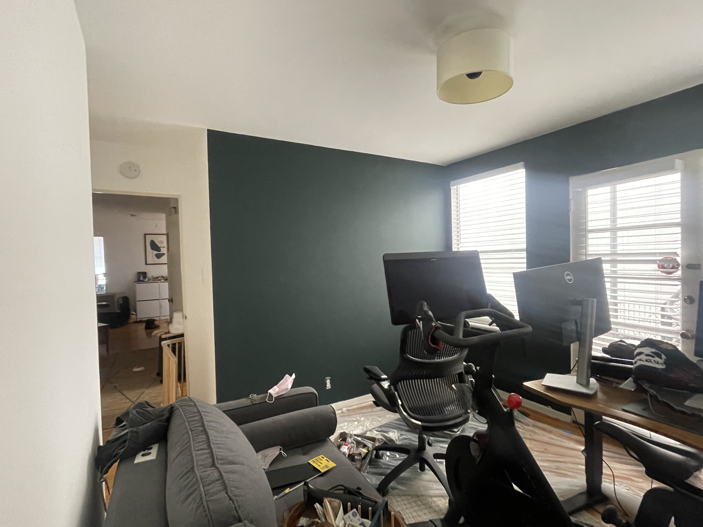
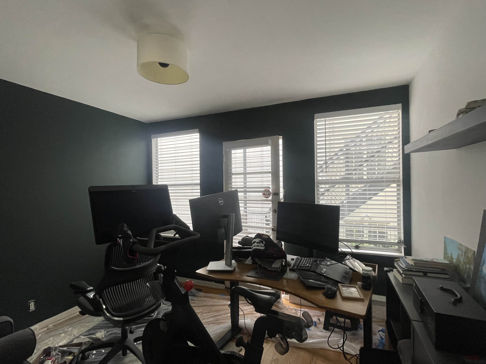
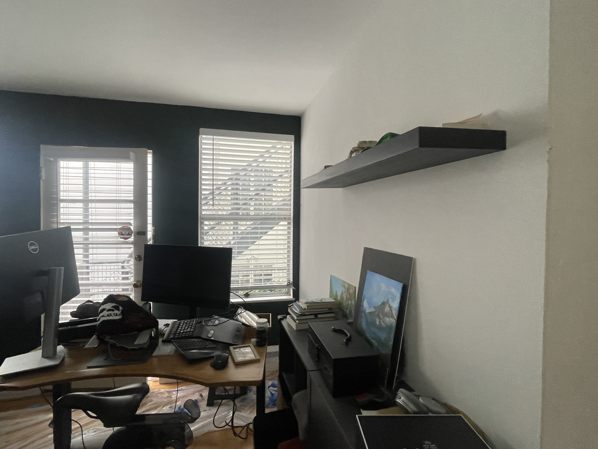
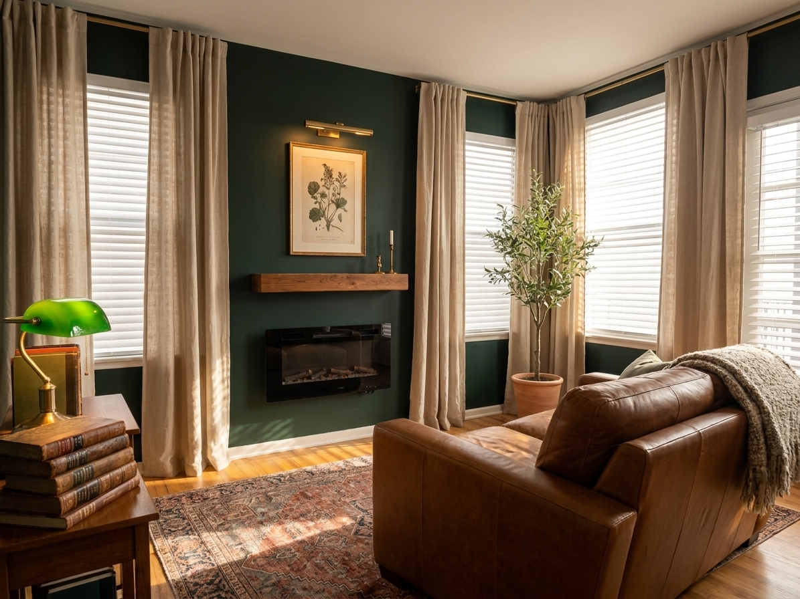
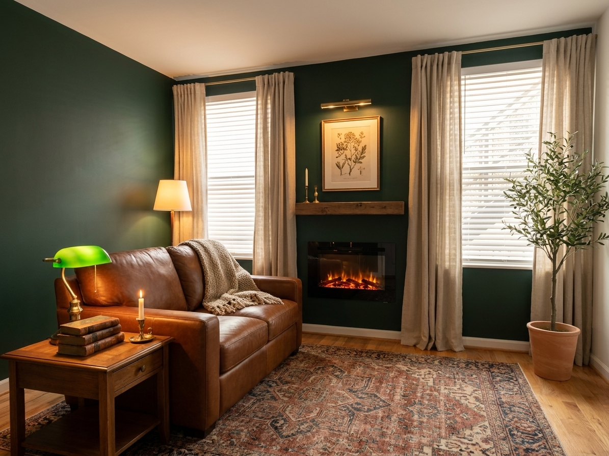
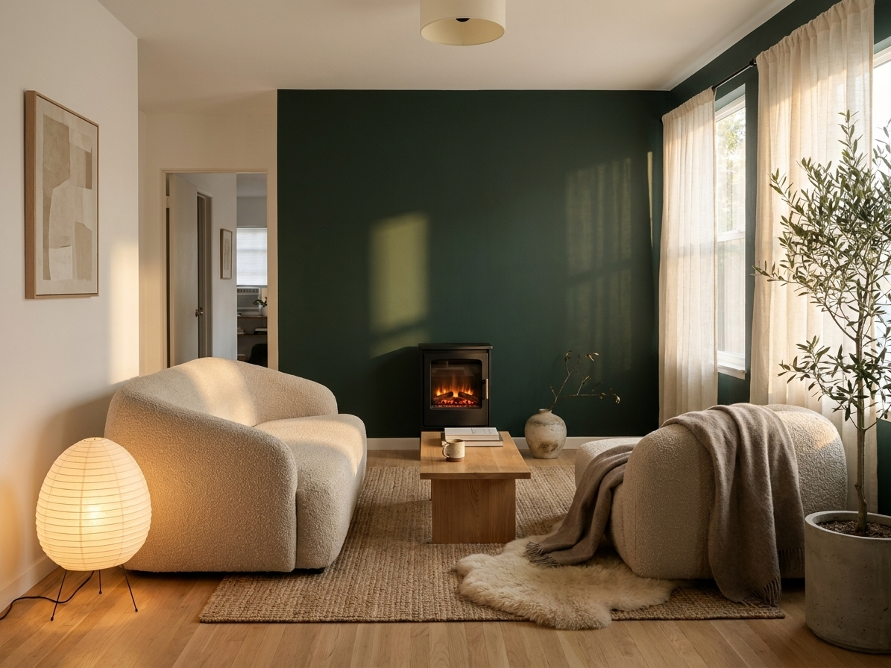
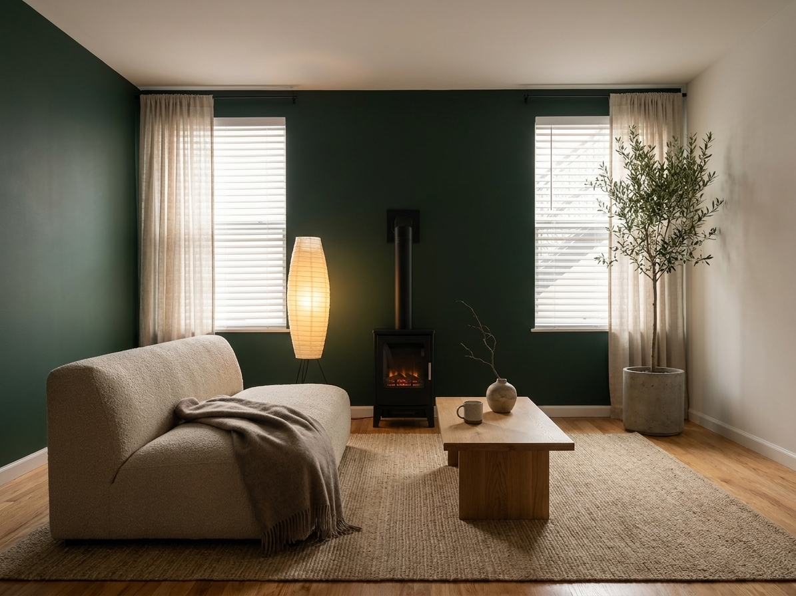
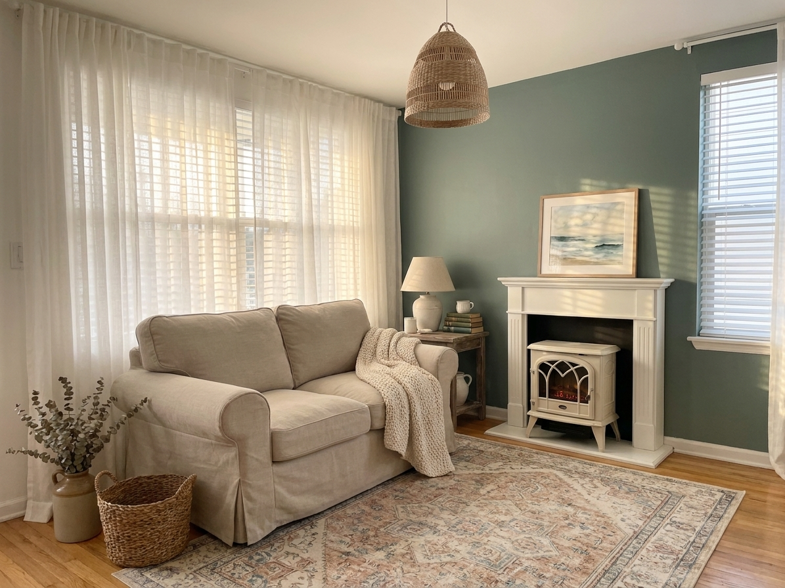
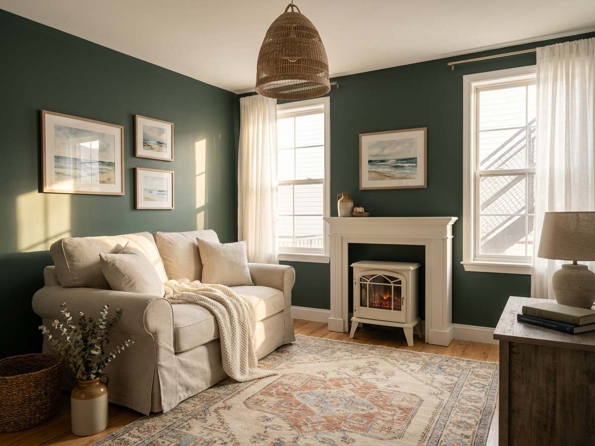

Before anything else, I sat with what's already here. The accent wall — that deep forest green — is doing more work than you might realize. It's not a problem; it's the room's voice. The light oak floor is the second gift. The challenge isn't the architecture. It's the clutter.



No matter which world we choose, this same checklist gets the room ~70% of the way. The directions diverge on style, not on these fundamentals.
The cream drum is generic. A $90 swap to something with character resets the whole room.
Floor lamp + table lamp + sconce or picture light. All warm 2700K. Overhead becomes the last thing on, not the first.
Floor-length, hung high-and-wide, just kissing the floor. This single move buys a huge cozy multiplier.
The room is too small for floating zones. Anchor the loveseat with one big rug and let the oak breathe around it.
No green pillows, no sage throws. The wall is the statement. Everything else is warm contrast.
Plug-in unit centered on the green wall. No install, no venting. Becomes the focal point you face into.
I didn't pick a style and shop. I ran the room through a parallel research-and-render pipeline, then let three distinct souls compete for the space.
Photographs analyzed for architecture, light, scale, palette, constraints. Notes saved to current-state.md.
Subagents pulled inspiration from r/CozyPlaces, dark-academia design blogs, cottage-coastal magazines, and Japandi 2026 trend reports. ~5,000 words of notes, 16 reference images.
Used Gemini 3 Pro Image to redesign your actual photographs — preserving the green wall, windows, ceiling, and floor exactly. Six renders, three directions, two angles each.
Each direction priced inside your $3–5K budget with named products at named prices. No vibes-only mood-boarding.
Gemini 3 Pro Image (primary render engine) · OpenAI gpt-image-1 (intended, but not enabled on the account) · Web research across 30+ sources · Self-built Node.js render pipeline at vision/scripts/ for repeatable batches.
You said "anywhere from cozy coastal to dark academia." That's a wide arc. Rather than guess your taste, I built one of each end and one in the middle — so you can choose by reaction, not by spec.


Top-grain cognac leather (sheds dog hair with one wipe — this is the leather argument). Faded Heriz Persian in muted rust + navy + cream. Reclaimed walnut mantel framing a Dimplex Revillusion firebox. Aged brass everywhere metal lives. Oatmeal linen drapes layered over the existing white blinds.
Reads moodier Reads more saturated Best for rainy evenings + whiskey

Slipcovered oat bouclé loveseat (slipcover = washable for the dog). Layered jute base + Beni Ourain on top + a draped sheepskin. Matte-black freestanding electric stove echoing a wood-burning hearth. Akari paper lantern as the literal cozy glow. Stonewashed linen drapes. Olive tree as the hero plant.
Reads calmer Reads more spacious Best for slow mornings + tea

Slipcovered oatmeal-linen roll-arm loveseat (washable, dog-friendly). Sun-faded vintage Turkish or Oushak — the rug carries the muted olive/terracotta that reconciles green wall to cream furniture without effort. White-enameled freestanding stove. Rattan pendant. Floor-length cream linen drapes. Eucalyptus and stoneware.
Reads lighter Reads softer Best for dog naps + window-open afternoonsHonest note: the AI flattered the green wall lighter than it is. In reality the wall stays its current dark green; cream linen and warm sunlight reframe how it reads. A v2 render would set expectations correctly.
The same wall, the same floor, the same windows — three different feelings.
| 01 · Cozy Library | 02 · Modern Cozy | 03 · Cozy Coastal | |
|---|---|---|---|
| Vibe | Tenured professor's study | Lamp-lit Japandi nook | Cornish cottage on a foggy afternoon |
| Loveseat | Cognac leather roll-arm | Oat bouclé deep slipcover | Cream linen slipcover roll-arm |
| Rug | Faded Heriz Persian | Jute + Beni Ourain | Jute + sun-faded Turkish |
| Fireplace | Wood-mantel + Dimplex insert | Matte-black freestanding stove | White-enameled freestanding stove |
| Lighting hero | Brass banker's lamp | Akari paper lantern | Rattan dome pendant |
| Reads as | Moodier, more saturated | Calmer, more spacious | Lighter, softer |
| Best for | Reading + whiskey + rain | Slow mornings + tea | Dog naps + windows open |
| Budget midpoint | ~$4,700 | ~$5,500 | ~$4,550 |
D1 — the Cozy Library — is the strongest match for the room's existing bones. The dark green wall wants to be a library. But you're a dog-on-couch household, which makes leather a mixed pick (great for hair, but requires summer-AC discipline and won't be the snuggle-down feel you described).
D1 silhouette × D2 fabric strategy. The Cozy Library's mood (cognac leather chair as accent, brass picture light, Persian rug, electric fireplace with reclaimed wood mantel) — but the main loveseat in a slipcovered performance fabric like Sixpenny's Vintage Linen or PB's Performance Everydaylinen. Slipcover wins for the dog. Cognac leather still appears in the room as a small accent piece (a vintage chair, a brass-tacked ottoman, leather-bound books).
This is the room I'd build first. You can always layer toward D2 (more wabi, less library) or D3 (lighter, more cottage) once you live in it.
Once you tell me which direction (or hybrid) to commit to, I'll re-render at higher fidelity, build the buy-order plan, and start sourcing.
Higher fidelity. Multiple angles. Loveseat orientation toward the fireplace wall as you specified. Realistic green-wall color. The actual loveseat model rendered in place. With and without a slim desk under the window.
Direct purchase links. Stock checks. Lead-time-aware ordering: rug + fireplace first (so the room has a center), then loveseat, then lighting, then decor. The room is livable at every stage.
Each item gets a tasks/t-NNNN.md entry with status, links, and price. I escalate to you for any commit-making decision per the project charter.
One sentence. "Go with D1, slipcover-not-leather" is enough. Or, "Push D2 a bit warmer". Or, "Show me a hybrid of D1 and D3". I'll do the rest.